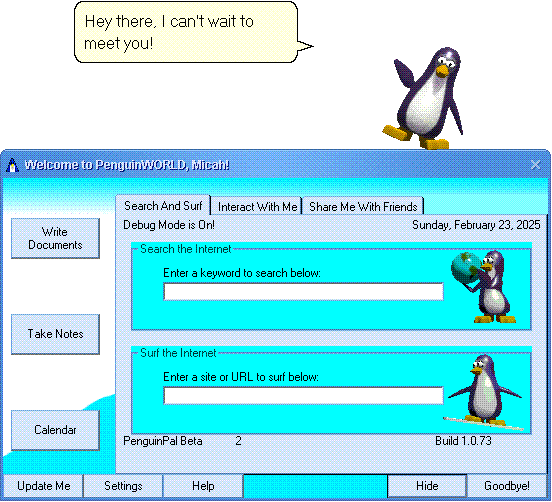

| Now Available for Download - FREE! |
Welcome to PenguinPAL! It's the future of internet travel and productivity, and the new way to interact with your computer! She will be an interactuve friend and a travelling companion!

What is a PenguinPAL?
PenguinPAL is a friend who can help you surf the internet! She talks with you, browses, searches, draws, and explores the internet as your traveling sidekick! With her built in artifical intelligence, she can learn from you (likes, dislikes, etc). Since the internet is constantly changing, and usually for the worse, PenguinPAL will occasionally recommend you webpages that may fall in line with your interests! No more slogging through AI generated summaries and multiple pages of either slop or pure uselessness!
PenguinPAL can also keep you informed! She will relay important news like updates, virus alerts, and general worldly news!
She can keep you on task and on schedule! With her built in calendar, flash cards, and notepad, she can do all of that and then some! She can read webpages to you, get downloads, and much more that will leave you wondering how you ever managed to survive without PenguinPAL!
Download PenguinPAL Free!
(c) 2026 MCopulos.com, All Rights Reserved
Windows, Microsoft Internet Explorer, and Microsoft are registered trademarks of Microsoft Corporation in the United States and/or other countries. PenguinPal is not a Microsoft Application, nor is it endorsed or sponsored by Microsoft Corporation. Any other legal stuff that needs to be done goes here.